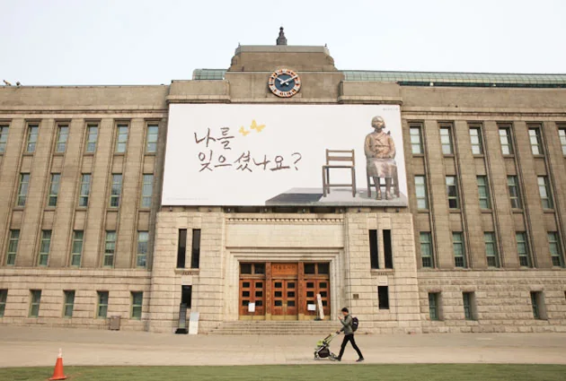
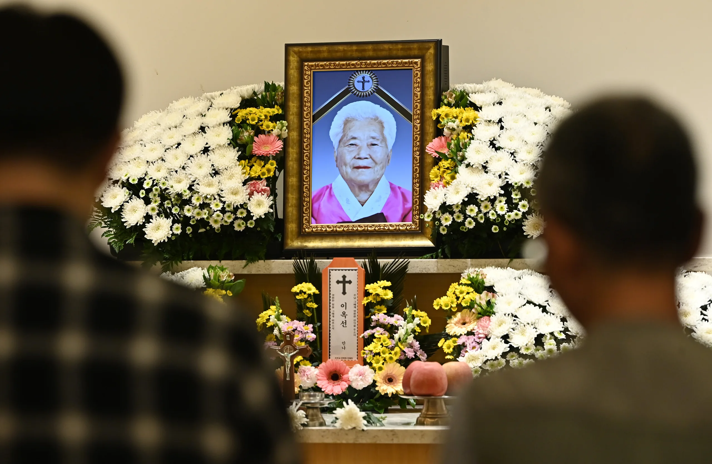
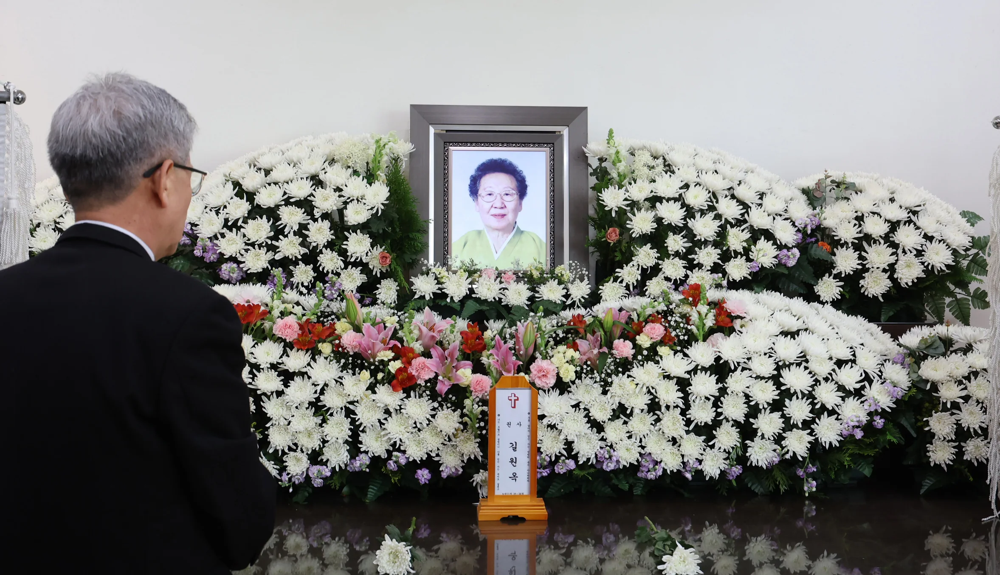
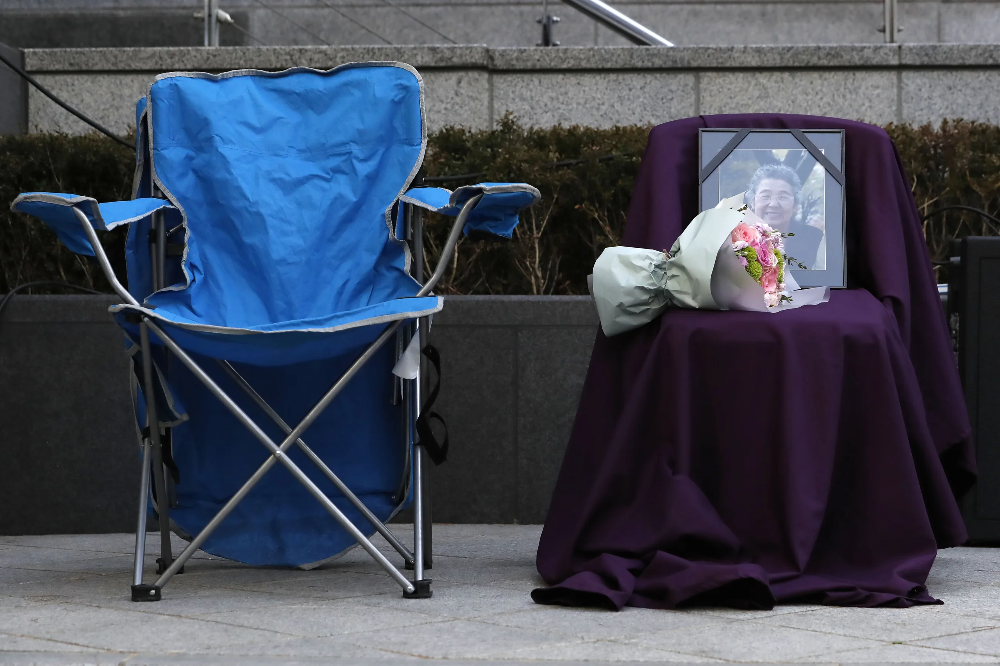
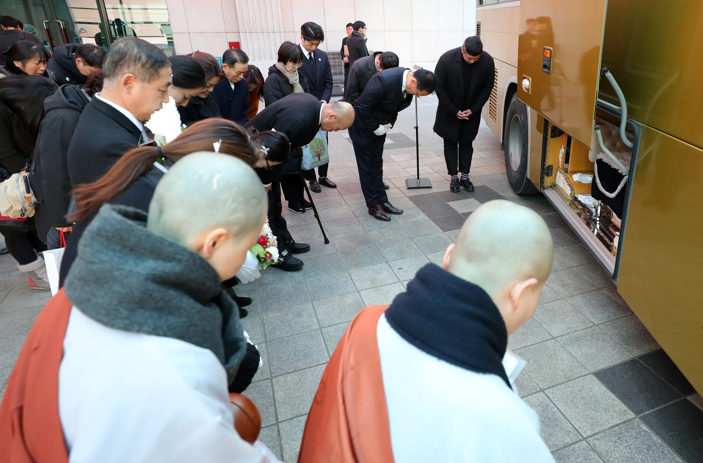
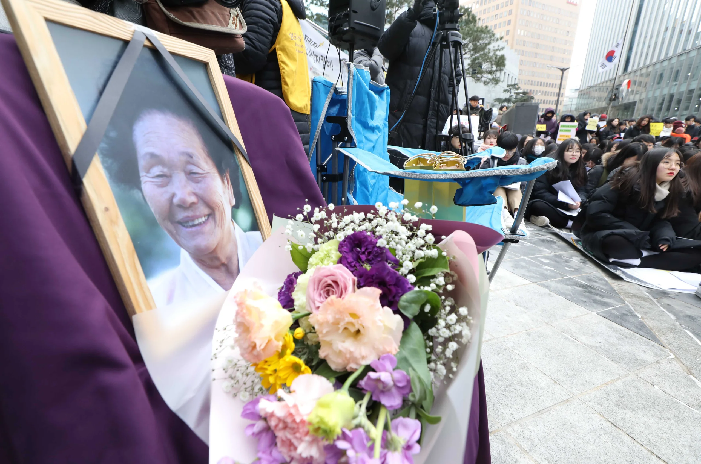
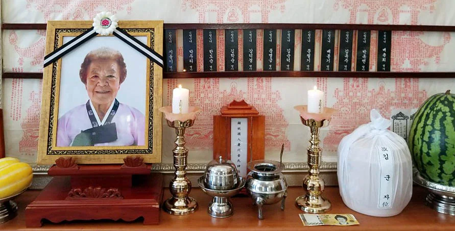
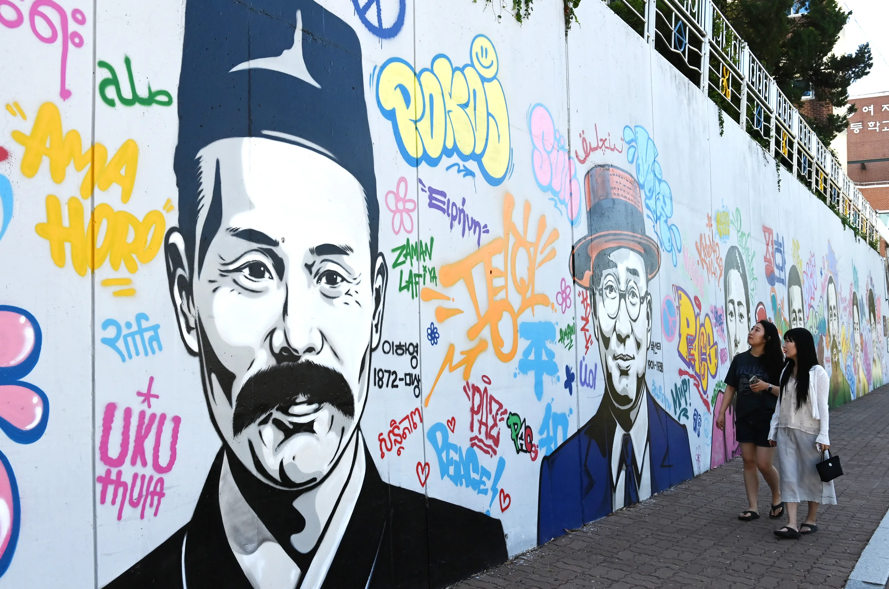
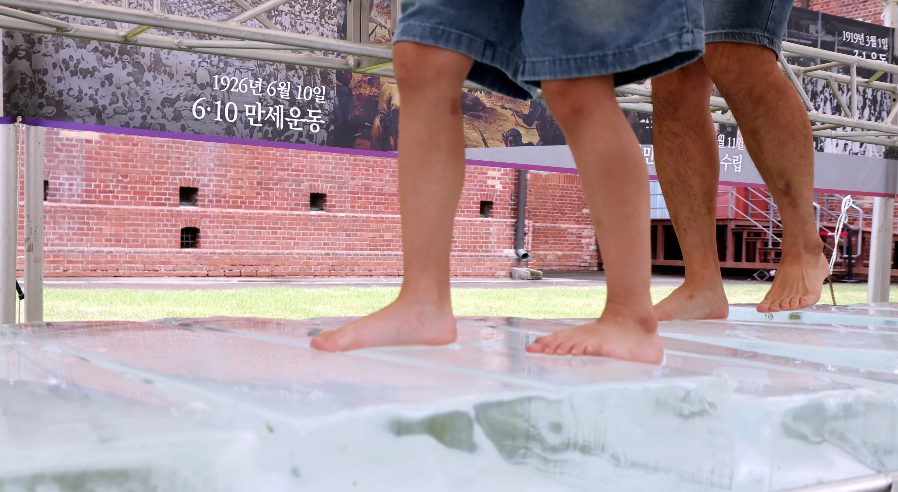
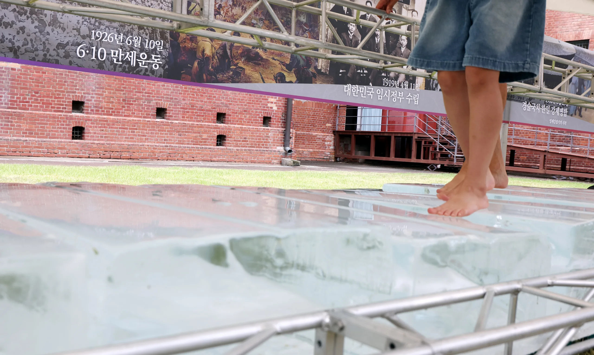

2011.08
증언 01 · 이옥선
남자 둘이서 나를 납치하는 거야.
대낮에 말이야.
그렇게 중국으로 끌려갔지.
일본군 ‘위안부’ 피해자 이옥선 할머니
누군가의 증언이 기록으로 남고, 그 기록이 우리의 기억으로 이어질 때
광복은 지나간 하루가 아니라 우리가 지켜야 할 오늘이 됩니다.
남자 둘이서 나를 납치하는 거야.
대낮에 말이야.
그렇게 중국으로 끌려갔지.
우리 인류에게 다시는 이러한 일들이
반복되지 않도록 문제 해결과
인권 운동을 시작했습니다.







조선총독부는 개정 조선민사령을 1940년 2월 11일부터 시행해 조선인에게 일본식 씨(氏)를 설정·신고하도록 강요했습니다.
1943년 제4차 조선교육령 아래 교육은 전시체제에 맞춰 재편됐고, 조선어 교과는 완전히 폐지됐습니다.
1943년 징병제가 공포·시행됐고, 국민징용령 개정으로 조선인에게 일반징용도 적용됐습니다.


